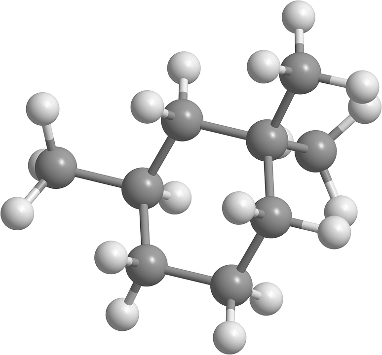
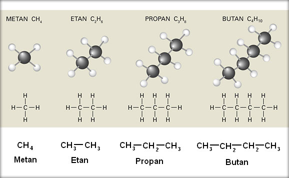
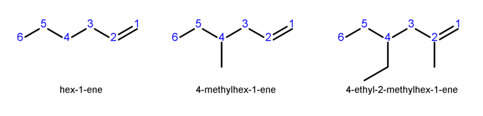
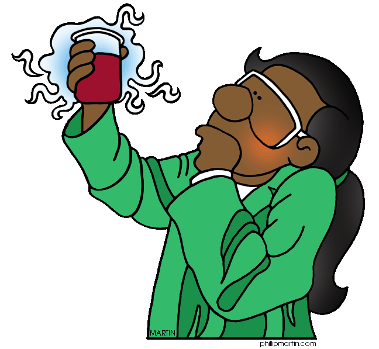
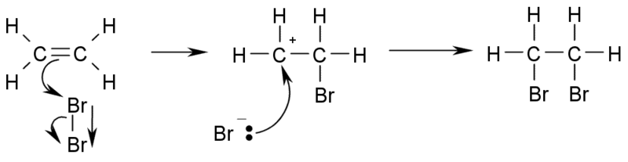
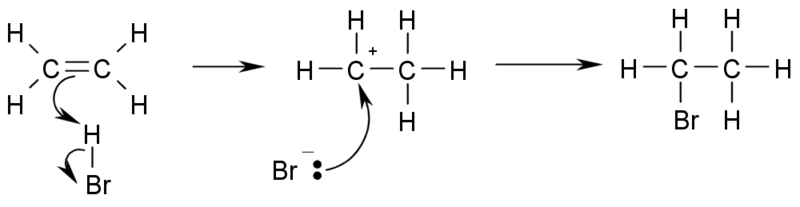
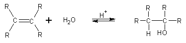
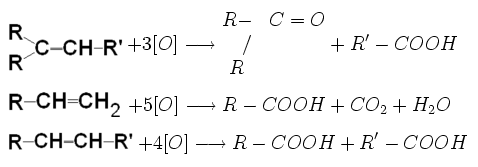

Clase de hidrocarburi:
Alcani
Alcanii sunt hidrocarburile în care nu apar decât legături simple de tipul C─C si C─H şi la care raportul numeric dintre cele două tipuri de atomi este exprimat prin formula CnH2n+2, unde n reprezintă numărul atomilor de carbon. În continuare, detalii despre alcani.
Denumirea alcanilor
Dacă i se dau lui n valori naturale succesive (şirul natural al numerelor) se obţine seria omoloagă a alcanilor. Numele alcanilor se formează după regulă, cu excepţia primilor patru termeni care au denumiri specifice.
n=1 CH4 metan CH4
n=2 C2H6 etan CH3─CH3
n=3 C3H8 propan CH3─CH2─CH3
n=4 C4H10 butan CH3─CH2─CH2─CH3
n=5 C5H12 pentan CH3─CH2─CH2─CH2─CH3
n=6 C6H14 hexan CH3─CH2─CH2─CH2─CH2─CH3
Toţi aceşti alcani au catene liniare. La alcanii cu patru atomi de carbon sau mai mulţi poate apărea ramificarea lanţului. De aceea, denumirea alcanilor liniari este completată cu prefixul normal iar denumirea alcanilor ramificaţi se completează cu prefixul "izo". Cicloalcanii sunt hidrocarburi ciclice saturate care conţin o catenă ciclică şi au formula generală CnH2n. Dacă din molecula unui alcan se îndepărtează un atom de hidrogen rezultă un radical alchil.
CH3─ (metil) ; ─CH2─ (metilen) ; ─CH─ (metin)
CH3─CH2─CH2─ (propil)
Proprietăţi fizice
Punctele de topire şi fierbere ale alcanilor cresc odată cu creşterea numărului de atomi de carbon. Ramificarea determină micşorarea punctului de fierbere. Alcanii de la C1 până la C4 sunt gazoşi, cei de la C4 până la C15 sunt lichizi iar alcanii superiori sunt solizi. Deoarece alcanii gazoşi nu au miros, pentru depistarea scăpărilor de gaze din conducte şi de la aragaz se folosesc compuşi cu miros respingător, de avertizare, numiţi mercaptani.
Proprietăţi chimice
Denumirea de parafine provine de la “parum affinis”- afinitate (chimică) mică, adică au reactivitate chimică scăzută. Reacţiile chimice la care participă alcanii se grupează după natura legăturilor covalente care se desfac(legăturile C─H se desfac la substituţie, dehidrogenare, oxidare; legăturile C─C se desfac la descompunere termică, izomerizare, ardere).
1. Reacţiile de substituţie
Halogenarea:→ derivaţi halogenaţi
R─H + X2 → R─X + HX
2. Reacţiile de izomerizare au loc la temperatura de 50 - 100°C sub acţiunea unor catalizatori ca bromura sau clorura de aluminiu anhidră. Această reacţie a fost descoperită de chimistul român C.D. Neniţescu.
3. Reacţiile de oxidare sunt reacţiile care au loc în prezenţa oxigenului. Acestea pot fi: oxidări incomplete şi oxidări totale (arderi).
Oxidări incomplete ale metanului:
CH4 + 1/2O2 → CH3OH (metanol) la 60 atm şi 400°C
CH4 + O2 → CH2O (aldehida formica) + H2O catalizatori oxizi de azot, 400-600°C
2CH4 + O2 → 2CO + 4H2(gaz de sinteză)
Arderi: Oxidarea totala a alcanilor conduce la formarea dioxidului de carbon şi a apei, cu degajare de căldură. Aceasta explică folosirea unor alcani ca şi combustibili.
CH4 + 2O2 → CO2 + 2H2O + Q(căldură)
4. Descompunerea termică a alcanilor
Alcanii prezintă stabilitate termică ridicată (la temperaturi mai mici are loc cracarea acestora,iar la temperaturi mai mari de de 650°C are loc dehidrogenarea).
Cracare
CH3─CH2─CH2─CH3 → CH4 (metan) + CH2═CH─CH3 (propena)
→ CH3─CH3 (etan) + CH2═CH2 (etena)
Dehidrogenare
CH3─CH2─CH2─CH3 → CH2═CH─CH2─CH3 (1-butenă)+ H2{jcomments on}
→ CH3─CH═CH─CH3 (2-butenă)+ H2
Alchene
Alchenele sunt hidrocarburile aciclice care conţin în molecula lor o legătură dublă între doi atomi de carbon. Alchenele au formula generală CnH2n, unde n reprezinta numărul de atomi de carbon din moleculă. Citiţi mai multe detalii în cele ce urmează.
Datorită prezenţei legăturii duble, alchenele fac parte din clasa hidrocarburilor nesaturate.
Dacă dăm valori lui n în formula generală a alchenelor, obţinem seria lor omoloagă. Compuşii se denumesc prin înlocuirea sufixului „an” de la alcani cu „enă”.
Trebuie să remarcăm că seria alchenelor începe de la n=2.
Exemplu: H2C═CH2 ------ etenă
CH3─CH═CH2 ------- propenă
CH3─CH2─CH═CH2 ------- butenă, iar lista poate continua.
La alchenele cu mai mult de trei atomi de carbon, se denumeşte atomul purtător al dublei legături:
CH2═CH─CH2─CH3 (1- butena)
CH3─CH═CH─CH3 (2-butena)
La o catenă ramificată, se precizează atât poziţia dublei legături cât şi poziţia ramificaţiei, folosind indici numerici, alegându-se situaţia în care indicele care arată poziţia dublei legături să fie minim. Aveţi un exemplu în imaginea de mai jos:
În afară de izomeria de catenă, întâlnită la alcani, alchenele pot genera un nou tip de izomerie, denumită izomerie de poziţie. Cel mai întâlnit caz este 1-butena şi 2-butena.
Un alt tip de izomerie este izomeria geometrică ce se referă la poziţia substituenţilor faţă de legătura dublă C═C. De exemplu, 2-butena prezintă izomerii geometrici „cis” şi „trans”.
De la alchene provin doi radicali importanţi ce intră în compoziţia unui număr mare de substanţe organice: vinil şi alil.
OBŢINEREA ALCHENELOR
a) Deshidratarea alcoolilor, prin încălzire cu acid sulfuric la 150 - 200°C.
R-CH2-CH2-OH (alcool) --> R-CH=CH2 (alchena) + H2O
b) Dehidrohalogenarea derivaţilor halogenaţi: La încălzire cu baze tari, în soluţii alcoolice, derivaţii halogenaţi elimină hidracid cu formarea unei alchene:
R-CH2-CH2X (derivat halogenat) --> R-CH=CH2 + HX , unde X poate fi F, Cl, Br sau I.
c) Cracarea alcanilor: În acest proces, larg aplicat în industrie, se formează cantităţi mari de alchene.
PROPRIETĂŢI FIZICEAlchenele pot fi gazoase, lichide sau solide, după numărul atomilor de carbon din moleculă. Alchenele de la C2 la C5 sunt gaze, cele de la C5 la C18 sunt lichide, iar alchenele superioare sunt solide.
Punctele de fierbere şi de topire cresc o dată cu masa moleculară, dar sunt mai mici decât la alcanii corespunzători. Au densitatea mai mică decât apa, sunt insolubile în apă, dar solubile în solvenţi organici. Sunt incolore şi fără miros.
PROPRIETĂŢI CHIMICE
Datorită prezenţei dublei legături, reactivitatea chimică a alchenelor este mai mare decât a alcanilor.
I) Reacţii de adiţie
a) Adiţia hidrogenului:
R─CH═CH2 (alchenă) + H2 --> R─CH2─CH3 (alcan)
Procesul de hidrogenare la temperaturi cuprinse între 80 - 200°C şi până la 200 atm. Drept catalizatori se folosesc ca Ni, Pt, Pd, etc.
b) Adiţia halogenilor la alchene conduce la derivaţi di-halogenaţi vicinali (halogenul se leagă la atomi de carbon vecini).
c) Adiţia de hidracizi la alchene duce la obţinere de derivaţi mono-halogenaţi:
Atunci când alchena este simetrică, adiţia decurge fără condiţii, ca în exemplul de mai sus. Dacă alchena este asimetrică, atunci se aplică regula lui Markovnikov (atomul de halogen se fixează la atomul cel mai sărac în hidrogen).
Exemplu:
R-CH=CH2 (alchenă asimetrică) + HCl --> R-CHCl-CH3 (derivat halogenat)
d) Adiţia apei la alchene duce la formarea alcoolilor (dacă avem o alchenă nesimetrică, se aplică regula lui Markovnikov).

II) Reacţia de oxidare
Oxidarea cu permanganat de potasiu în mediu de acid sulfuric determină ruperea dublei legături cu obţinere de acizi sau cetone, în funcţie de structura alchenei supuse oxidării:
III) Reacţia de polimerizare
Prin polimerizare se înţelege procesul chimic prin care un mare număr de molecule identice, ale unor compuşi nesaturaţi, se leagă între ele, formând o moleculă unică (macromoleculă). Schematic, procesul de polimerizare se reprezintă:
nA → ─[A]n─
Exemplu: nCH2═CH2 → ─ [CH2─CH2]n ─ (polietenă)
Indicele n, numit grad de polimerizare, arată numărul de molecule de etenă care alcătuiesc lanţul macromolecular. Substanţa A este monomer, iar produsul final este polimerul.